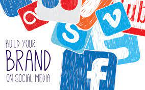
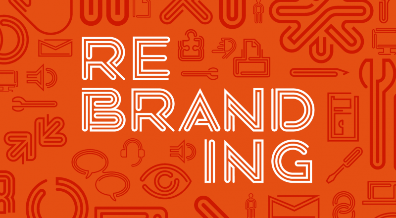

Что такое бренд?
Бренд - это то, как компания, организация или отдельное лицо воспринимаются теми, кто с ними сталкивается. Бренд - это больше, чем просто имя, термин, дизайн или символ, это узнаваемое ощущение, которое вызывает продукт или бизнес.

Таким образом, бренды живут в уме. Они живут в сознании всех, кто с ними сталкивается: сотрудников, инвесторов, средств массовой информации и, что, возможно, наиболее важно, клиентов.
Проще говоря, бренды - это восприятие.
Подумайте о бренде. Любой бренд. Apple, Coca-Cola, FedEx, Dunkin 'Donuts - не имеет значения. Мы здесь довольно большие поклонники Apple, так что мы будем придерживаться этого.
Что такое бренд Apple? Это не компьютеры, телефоны и прочие крутые штуки, без которых мы не можем жить. Это продукты, которые производит Apple. И это не изящная телевизионная реклама , драматично поставленные презентации или шикарные минималистичные витрины. Это все маркетинг и реклама. По общему признанию, это крутой маркетинг и реклама, но все же.
Даже название и логотип Apple не отражают того, что мы имеем в виду, когда говорим о бренде Apple.
Оказывается, бренд Apple - это не что-то в полном смысле этого слова. Вы не можете удержать его, услышать или даже прикоснуться к нему. Но это не значит, что ее бренд - не самая ценная вещь, которой владеет Apple.
Бренд Apple - это причина, по которой вы буквально не могли платить многим клиентам Apple за использование любого другого продукта. Дальновидный и цельный опыт бренда Apple стал неотъемлемой частью идентичности легиона преданных последователей. По этой причине ее бренд является главным конкурентным преимуществом Apple . Ничто другое даже близко не подходит.
Сильный бренд увеличивает шансы клиентов выбрать ваш продукт или услугу по сравнению с вашими конкурентами. Он привлекает больше клиентов по более низкой цене за приобретение, которые готовы платить немного больше и будут покупать немного чаще.
Чтобы лучше понять, почему ваш бренд так ценен, давайте начнем с разбивки его на основные элементы.
Прочная корпоративная культура приводит к внутреннему выравниванию бренда - идеальному состоянию, когда сотрудники бренда понимают его на самом глубоком уровне и мотивированы действовать в качестве его послов.
Системы архитектуры бренда обычно делятся на монолитные, одобренные или плюралистические. Монолитная архитектура бренда включает один главный бренд и несколько под брендов. Одобренные и плюралистические архитектуры включают в себя родительские бренды с различными отношениями к подразделениям, которыми они руководят.
Сложный характер создания имен и слоганов свидетельствует об их важности. Сильное имя выражает уникальные ценностные предложения бренда, выделяя его среди конкурентов и оставляя сильное впечатление на тех, кто с ним сталкивается.
Эффективная идентичность будет воплощать в себе все определяющие характеристики вашего бренда, включая его индивидуальность, обещание и цель. Идентичность вашего бренда - это его печать в мире - эстетический символ, полный смысла, способный передать суть вашего бренда в визуальный момент всем, кто с ним сталкивается.
Голос и обмен сообщениями делают ваш бренд более человечным, делая его узнаваемым для ваших клиентов. В каждом случае, когда голос вашего бренда слышен, будь то через маркетинговые материалы, рекламные сценарии или копию веб-сайта, ваши клиенты должны быть в состоянии узнать его немедленно - как старый друг на другом конце телефона.
Теперь, когда мы проанализировали различные компоненты, составляющие бренд, пришло время посмотреть, как и, что более важно, почему эти компоненты создаются: брендинг.
Сами по себе покупатели не покупают айфоны. Но они критически важны по одной причине: восприятие диктует поведение. Даже представления, о которых мы не подозреваем, могут сильно повлиять на наши действия. Исследования в области экспериментальной социальной психологии показали, что, хотя мы можем думать, что полностью контролируем свои действия, на наше поведение часто влияют стимулы, о которых мы совершенно не подозреваем.
В общем, то, как человек воспринимает бренд (сознательно или бессознательно), полностью определяет, как он или она будет взаимодействовать с этим брендом. Сила брендинга зависит от очень важной истины о восприятии:
Восприятие податливо.
Брендинг может формировать наше восприятие, потому что это восприятие может быть изменено. Они практически взывают об этом. Знаем мы это или нет, но мы постоянно ищем смысл и порядок в окружающем мире. Без него мы потерялись. Мы хотим, чтобы наши реалии имели смысл.
Что касается нашего мозга, практической разницы между восприятием и реальностью нет. Мы воспринимаем то, что реально для нас. В этом заключается реальная сила брендинга. Если брендинг может формировать наше восприятие, и наше восприятие является нашей реальностью, из этого следует, что:
Брендинг может формировать реальность.
Это может звучать как преувеличение, но в самом прямом смысле это правда. Сила брендинга в формировании потребительской реальности - вот почему такие компании, как Apple, тратят на него миллионы долларов каждый год. Когда вы эффективно используете способность создавать реальность, вы можете оказывать неизмеримо ценное влияние на покупательское поведение потребителей.
Итак, зачем инвестировать в брендинг? Ключевое слово здесь - « инвестиции ». Слишком многие компании рассматривают брендинг как еще одну статью расходов, учитываемых в их маркетинговом бюджете. Но когда вы понимаете, как неотъемлемый брендинг влияет на поведение потребителей , вы понимаете, что это больше, чем просто тактика. Это долгосрочная стратегия, которая может приносить ощутимый доход на протяжении всей жизни вашей компании. Взгляните только на пять из самых высоких доходов, которые вы получите от инвестиций в брендинг:
С помощью этой информации вы можете создавать четко определенные образы аудитории и создавать маркетинговые сообщения, специально нацеленные на ваших идеальных клиентов. Идеальные клиенты не просто с большей вероятностью купят то, что вы продаете; они также значительно более лояльны в своих отношениях с вашим брендом. И мало что может быть дороже лояльности к бренду.
Как мы только что упомянули, исследование клиентов, связанное с брендингом, позволяет вам разрабатывать целевые маркетинговые кампании, которые имеют прямое отношение к вашим наиболее ценным сегментам клиентов. Смелый новый стиль делает каждую точку соприкосновения с маркетингом более привлекательной, а рекомендации и шаблоны, вытекающие из брендинга, сэкономят ваше время и деньги на содержании всех ваших будущих инициатив.
Это снимает огромную нагрузку с плеч его отдела продаж, потому что значительная часть их работы уже выполнена хорошо, прежде чем они начнут взаимодействовать с потенциальными клиентами. Брендинг дает вашим продавцам уникальное преимущество, позволяя им быстрее и увереннее заключать сделки.
Эффективный брендинг позволяет вам позиционировать вашу компанию как лидера отрасли с ценными предложениями, которые не может предложить ни один из ваших конкурентов. В этом типе значимой дифференциации заложена ощутимая ценность. Это укрепляет вашу ценность и позволяет вам устанавливать более высокие цены на свои товары или услуги.
«Брендинг - это дисциплинированный процесс , используемый для повышения осведомленности и повышения лояльности клиентов. Это требует полномочий сверху и готовности инвестировать в будущее. Брендинг - это использование любой возможности, чтобы выразить, почему люди должны выбирать один бренд, а не другой. Желание лидировать, опережать конкурентов и предоставить сотрудникам лучшие инструменты для охвата клиентов - вот причины, по которым компании используют брендинг ».
Ведущая отрасль как организация, опережая конкурентов, расширение прав и возможностей работников, по мнению экспертов, брендинг является бесспорно мощный процесс. Когда вы понимаете, что такое бренд, как он создается и какую измеримую отдачу от инвестиций в брендинг, эта сила становится очевидной.
Брендинг приносит дивиденды на протяжении всей жизни вашей компании, позволяя привлекать лучших клиентов с меньшими маркетинговыми затратами, при этом устанавливая более высокие цены на ваши предложения. Более плавные продажи, повышение лояльности клиентов, многогранные преимущества капитала бренда - список преимуществ можно продолжить. В конце концов, однако, ваш бренд - это то, как мир воспринимает вашу компанию. Что может быть более разумным вложением, чем формирование такого восприятия?
Проще говоря, бренды - это восприятие.
Ваш бренд - самый ценный актив вашей компании
Несмотря на свою нематериальную природу, бренды являются бизнес-инструментами , повышающими коммерческую ценность.Подумайте о бренде. Любой бренд. Apple, Coca-Cola, FedEx, Dunkin 'Donuts - не имеет значения. Мы здесь довольно большие поклонники Apple, так что мы будем придерживаться этого.
Что такое бренд Apple? Это не компьютеры, телефоны и прочие крутые штуки, без которых мы не можем жить. Это продукты, которые производит Apple. И это не изящная телевизионная реклама , драматично поставленные презентации или шикарные минималистичные витрины. Это все маркетинг и реклама. По общему признанию, это крутой маркетинг и реклама, но все же.
Даже название и логотип Apple не отражают того, что мы имеем в виду, когда говорим о бренде Apple.
Оказывается, бренд Apple - это не что-то в полном смысле этого слова. Вы не можете удержать его, услышать или даже прикоснуться к нему. Но это не значит, что ее бренд - не самая ценная вещь, которой владеет Apple.
Бренд Apple - это причина, по которой вы буквально не могли платить многим клиентам Apple за использование любого другого продукта. Дальновидный и цельный опыт бренда Apple стал неотъемлемой частью идентичности легиона преданных последователей. По этой причине ее бренд является главным конкурентным преимуществом Apple . Ничто другое даже близко не подходит.
Сильный бренд увеличивает шансы клиентов выбрать ваш продукт или услугу по сравнению с вашими конкурентами. Он привлекает больше клиентов по более низкой цене за приобретение, которые готовы платить немного больше и будут покупать немного чаще.
Чтобы лучше понять, почему ваш бренд так ценен, давайте начнем с разбивки его на основные элементы.
Элементы бренда
В представлении бренды состоят из множества различных элементов. Это помогает взглянуть на самые важные из них, так как они являются сферой следующей концепции, которую мы рассмотрим: брендинг. Фундаментальные элементы бренда включают компас бренда, культуру компании, название и слоган, идентичность, голос и сообщения, веб-сайт и архитектуру бренда.Бренд Компас
Компас бренда - это краткое изложение самых фундаментальных истин о вашем бренде . Это результат работы, проделанной на этапе стратегии бренда, включая исследования и позиционирование. Компас бренда показывает, в каком направлении движется ваш бренд и почему. Он состоит из пяти частей: цель, видение, миссия, ценности и стратегические цели.Корпоративная культура
Корпоративная культура - это дух коллективной цели и вдохновения, который движет вашим брендом . Однако это больше, чем просто пламенные речи руководителей и столы для пинг-понга в местах общего пользования. Самая сильная корпоративная культура основана на основных ценностях бренда, на тех принципах, которые определяют, как ваш бренд взаимодействует с миром и почему.Прочная корпоративная культура приводит к внутреннему выравниванию бренда - идеальному состоянию, когда сотрудники бренда понимают его на самом глубоком уровне и мотивированы действовать в качестве его послов.
Личность бренда
Индивидуальность бренда - это уникальный спектр мыслей, эмоций и поведенческих паттернов, присущих бренду. Его индивидуальность включает в себя самые индивидуалистические черты бренда. Это то, что делает Apple шикарным художником-минималистом, а REI - суровым новатором на природе. Личность бренда - это причина, по которой его узнают лояльные клиенты, и основа для сугубо личных отношений, которые они с ним формируют.Архитектура бренда
Архитектура бренда - это согласованная система названий, цветов, символов и визуального языка, которая определяет бренд или бренды . Превосходная архитектура бренда является продуманной и интуитивно понятной, основанной на исследованиях потребительского опыта.Системы архитектуры бренда обычно делятся на монолитные, одобренные или плюралистические. Монолитная архитектура бренда включает один главный бренд и несколько под брендов. Одобренные и плюралистические архитектуры включают в себя родительские бренды с различными отношениями к подразделениям, которыми они руководят.
Название и слоган
Название и слоган бренда - это его самое непосредственное лицо в мире. Они должны быть наполнены смыслом - либо внутренне, либо в результате методичного повествования о бренде. Многое уходит на создание названия бренда и слогана. Углубленное исследование рынка, мозговой штурм, уточнение, тестирование - этот процесс призван гарантировать, что эти прозвища не только значимы, но и пригодны для владения.Сложный характер создания имен и слоганов свидетельствует об их важности. Сильное имя выражает уникальные ценностные предложения бренда, выделяя его среди конкурентов и оставляя сильное впечатление на тех, кто с ним сталкивается.
Фирменный стиль
Индивидуальность вашего бренда - это больше, чем просто его логотип. Идентичность - это визуальное воплощение глубоких истин о вашем бренде, раскрытых в стратегии и позиционировании .Эффективная идентичность будет воплощать в себе все определяющие характеристики вашего бренда, включая его индивидуальность, обещание и цель. Идентичность вашего бренда - это его печать в мире - эстетический символ, полный смысла, способный передать суть вашего бренда в визуальный момент всем, кто с ним сталкивается.

Голос бренда и обмен сообщениями
Голос бренда и обмен сообщениями имеют решающее значение для взаимодействия бренда с миром. Они отличают ваш бренд от конкурентов тем, что выражают его цель, обещание и индивидуальность.Голос и обмен сообщениями делают ваш бренд более человечным, делая его узнаваемым для ваших клиентов. В каждом случае, когда голос вашего бренда слышен, будь то через маркетинговые материалы, рекламные сценарии или копию веб-сайта, ваши клиенты должны быть в состоянии узнать его немедленно - как старый друг на другом конце телефона.
Сайт бренда
Ваш веб-сайт - это наиболее полное и централизованное проявление вашего бренда . Хороший веб-сайт оживит ваш бренд с помощью привлекательного контента и привлекательного дизайна. В наши дни веб-сайты больше не ограничиваются настольными компьютерами. Они путешествуют с нами на наших мобильных устройствах во все уголки мира. Веб-сайты остаются одним из наиболее эффективных и экономичных способов предоставить вашей целевой аудитории целостный брендинг.Теперь, когда мы проанализировали различные компоненты, составляющие бренд, пришло время посмотреть, как и, что более важно, почему эти компоненты создаются: брендинг.
Что такое брендинг?
Брендинг - это процесс формирования восприятия компании, организации или человека.Сами по себе покупатели не покупают айфоны. Но они критически важны по одной причине: восприятие диктует поведение. Даже представления, о которых мы не подозреваем, могут сильно повлиять на наши действия. Исследования в области экспериментальной социальной психологии показали, что, хотя мы можем думать, что полностью контролируем свои действия, на наше поведение часто влияют стимулы, о которых мы совершенно не подозреваем.
В общем, то, как человек воспринимает бренд (сознательно или бессознательно), полностью определяет, как он или она будет взаимодействовать с этим брендом. Сила брендинга зависит от очень важной истины о восприятии:
Восприятие податливо.
Брендинг может формировать наше восприятие, потому что это восприятие может быть изменено. Они практически взывают об этом. Знаем мы это или нет, но мы постоянно ищем смысл и порядок в окружающем мире. Без него мы потерялись. Мы хотим, чтобы наши реалии имели смысл.
Что касается нашего мозга, практической разницы между восприятием и реальностью нет. Мы воспринимаем то, что реально для нас. В этом заключается реальная сила брендинга. Если брендинг может формировать наше восприятие, и наше восприятие является нашей реальностью, из этого следует, что:
Брендинг может формировать реальность.
Это может звучать как преувеличение, но в самом прямом смысле это правда. Сила брендинга в формировании потребительской реальности - вот почему такие компании, как Apple, тратят на него миллионы долларов каждый год. Когда вы эффективно используете способность создавать реальность, вы можете оказывать неизмеримо ценное влияние на покупательское поведение потребителей.
Зачем инвестировать в брендинг?
Нерешительность некоторых компаний вкладывать средства в брендинг также связана с их восприятием. Непросто провести прямую корреляцию между успешным брендированием и поддающейся количественной оценке отдачей. Но простой факт в том, что невозможно оценить ценность разработки по-настоящему аутентичного бренда.Итак, зачем инвестировать в брендинг? Ключевое слово здесь - « инвестиции ». Слишком многие компании рассматривают брендинг как еще одну статью расходов, учитываемых в их маркетинговом бюджете. Но когда вы понимаете, как неотъемлемый брендинг влияет на поведение потребителей , вы понимаете, что это больше, чем просто тактика. Это долгосрочная стратегия, которая может приносить ощутимый доход на протяжении всей жизни вашей компании. Взгляните только на пять из самых высоких доходов, которые вы получите от инвестиций в брендинг:
Привлекайте идеальных клиентов
Центральным элементом любой инициативы по брендингу является исследование клиентов . Глубинные интервью, фокус-группы и онлайн-опросы позволяют точно определить, какие типы клиентов соответствуют целям и ценностям вашей компании.С помощью этой информации вы можете создавать четко определенные образы аудитории и создавать маркетинговые сообщения, специально нацеленные на ваших идеальных клиентов. Идеальные клиенты не просто с большей вероятностью купят то, что вы продаете; они также значительно более лояльны в своих отношениях с вашим брендом. И мало что может быть дороже лояльности к бренду.
Повышение эффективности маркетинга
Самый простой способ сделать ваши маркетинговые усилия более эффективными - это инвестировать в бренд, от которого они исходят. Когда ваш бренд сплочен и хорошо сформулирован, ваши маркетинговые инициативы тоже. Брендинг включает в себя основные «первые шаги», которые определяют ваш основной обмен сообщениями, индивидуальность бренда и устойчивое положение на рынке.Как мы только что упомянули, исследование клиентов, связанное с брендингом, позволяет вам разрабатывать целевые маркетинговые кампании, которые имеют прямое отношение к вашим наиболее ценным сегментам клиентов. Смелый новый стиль делает каждую точку соприкосновения с маркетингом более привлекательной, а рекомендации и шаблоны, вытекающие из брендинга, сэкономят ваше время и деньги на содержании всех ваших будущих инициатив.
Заключайте сделки проще
Спросите любого продавца, стоящего на переднем крае комиссионных войн, и он скажет вам: четко определенные, стратегически позиционированные бренды просто продать легче. Это потому, что их ценностные предложения встроены в повествование о бренде . Аргумент в пользу явного превосходства хорошо позиционируемого бренда уже четко сформулирован.Это снимает огромную нагрузку с плеч его отдела продаж, потому что значительная часть их работы уже выполнена хорошо, прежде чем они начнут взаимодействовать с потенциальными клиентами. Брендинг дает вашим продавцам уникальное преимущество, позволяя им быстрее и увереннее заключать сделки.
Командуйте более высокими ценами
Они говорят правду: клиенты не покупают продукты, они покупают бренды. И клиенты готовы платить более высокую цену за бренды, которые они считают лучшими. Белая футболка от Hanes обойдется вам примерно в 5 долларов. Белая футболка с биркой Armani обойдется вам в 150 долларов.Эффективный брендинг позволяет вам позиционировать вашу компанию как лидера отрасли с ценными предложениями, которые не может предложить ни один из ваших конкурентов. В этом типе значимой дифференциации заложена ощутимая ценность. Это укрепляет вашу ценность и позволяет вам устанавливать более высокие цены на свои товары или услуги.
Повышайте ценность бизнеса
Никогда не недооценивайте силу капитала бренда. Помимо оправдания повышения цен на ваши предложения, это также может положительно сказаться на цене ваших акций. Более сильные бренды достигают более высоких финансовых показателей. Долгосрочный результат брендинга заключается в том, что ваша компания стоит больше, когда вы готовы выйти из нее. Как и стоимость ремонта дома, инвестиции в брендинг приносят значительную прибыль, когда приходит время договариваться о продажной цене.Вывод
В своей основополагающей книге Designing Brand Identity эксперт по брендингу Алина Уиллер описывает внутренний / внешний результат брендинга следующим образом:«Брендинг - это дисциплинированный процесс , используемый для повышения осведомленности и повышения лояльности клиентов. Это требует полномочий сверху и готовности инвестировать в будущее. Брендинг - это использование любой возможности, чтобы выразить, почему люди должны выбирать один бренд, а не другой. Желание лидировать, опережать конкурентов и предоставить сотрудникам лучшие инструменты для охвата клиентов - вот причины, по которым компании используют брендинг ».
Ведущая отрасль как организация, опережая конкурентов, расширение прав и возможностей работников, по мнению экспертов, брендинг является бесспорно мощный процесс. Когда вы понимаете, что такое бренд, как он создается и какую измеримую отдачу от инвестиций в брендинг, эта сила становится очевидной.
Брендинг приносит дивиденды на протяжении всей жизни вашей компании, позволяя привлекать лучших клиентов с меньшими маркетинговыми затратами, при этом устанавливая более высокие цены на ваши предложения. Более плавные продажи, повышение лояльности клиентов, многогранные преимущества капитала бренда - список преимуществ можно продолжить. В конце концов, однако, ваш бренд - это то, как мир воспринимает вашу компанию. Что может быть более разумным вложением, чем формирование такого восприятия?